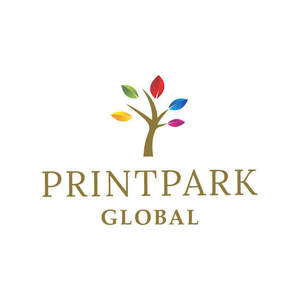

Trade Mark Journal No.2025/010 7 March 2025
UK00004165741 26 February 2025 (16)

- Class 16
- Printed matter; Printed packaging materials of paper; Printed paper labels; Printed paper signs; Paper stock [printing paper]; Diaries [printed matter]; Printed paper invitations; Printing paper; Flow sheets [printed matter]; Planners [printed matter]; Paper cartons for delivering goods; Printed advertising boards of paper; Newsprint paper; Paper for printing photographs; Paper; Cartoon strips [printed matter]; Paper stationery; Supercalendered printing paper; Semi-processed paper; Packaging materials made of recycled paper; Photographic printing paper; Wrapping materials made of paper; Comic strips [printed matter]; Recycled paper; Printed stationery; Ships logs [printed matter]; Tissue paper for use as material of stencil paper (ganpishi); Digital printing paper; Bags of paper for foodstuffs; Bags made of paper for packaging; Paper and cardboard; Marine logs [printed matter]; Paper envelopes for packaging; Labels of paper or cardboard; Paper hangtags; Cloth paper; Paper sheets [stationery]; Letter paper [finished products]; Copying paper [stationery]; Giftwrapping paper; Bulk paper; Dye-sublimation print paper; Printed cardboard invitations; Offset printing paper for pamphlets; Rubbish bags (made of paper or plastic materials); Padding materials of paper or cardboard; Labels of paper; Paper labels; Tissue paper for making stencil paper; Letterhead paper; Printing papers; Tablecloths of paper; Paper tablecloths; Paper crafts materials; Paper bags for packaging; Packaging bags of paper; Printed correspondence course materials; Gift-wrapping paper; Bags and articles for packaging, wrapping and storage of paper, cardboard or plastics; Laser print paper; Printed matter for instructional purposes; Paper made from paper mulberry (tengujosi); Paper for wrapping books; Paraffined paper [waxed paper]; Bags made of paper; Postcard paper; Industrial paper and cardboard; Absorbent sheets of paper or plastic for foodstuff packaging; Advertising signs of paper or cardboard; Signboards of paper or cardboard; Laminated paper; Plotting papers [graph paper as finished products]; Business card paper [semi-finished]; Placards of paper or cardboard; Packing paper; Paper bags; Bags of paper; Packaging boxes of paper; Decorations of paper for foodstuffs; Paper for use in the manufacture of wallpaper; Bags for packaging made of biodegradable paper; Posters made of paper; Photocopy paper; Paper handkerchiefs; Handkerchiefs of paper; Paper napkins; Napkins of paper; Stencil paper [mimeograph paper]; Handkerchiefs made of paper.
PRINT PARK GLOBAL LTD